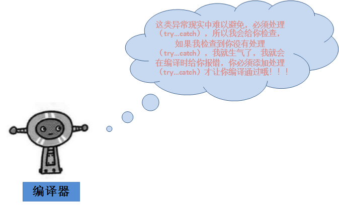

Java Exception Handling
In Java, exception handling is an important programming concept used to handle errors or exceptional conditions that may occur during program execution.
Exceptions are some errors in a program, but not all errors are exceptions, and errors can sometimes be avoided.
For example, if your code is missing a semicolon, then the output is an error promptjava.lang.Error, if you useSystem.out.println(11/0), then because you use0as a divisor, will throwjava.lang.ArithmeticExceptionan exception.
There are many reasons for exceptions, usually including the following categories:
- The user entered invalid data.
- The file to be opened does not exist.
- The connection is interrupted during network communication, or JVM memory overflows.
Some of these exceptions are caused by user errors, some by program errors, and others by physical errors.
To understand how Java exception handling works, you need to master the following three types of exceptions:
Checked exceptions:The most representative checked exceptions are exceptions caused by user errors or problems. These exceptions force programmers to handle them at compile time. For example, when trying to open a non-existent file, an exception occurs, and these exceptions cannot be simply ignored at compile time.
This type of exception is usually handled usingtry-catchblocks to catch and handle the exception, or usingthrowsclauses to declare exceptions that a method may throw.
try { // 可能会抛出异常的代码 } catch (IOException e) { // 处理异常的代码 }Or:
public void readFile() throws IOException { // 可能会抛出IOException的代码 }Runtime exceptions:These exceptions are not required to be handled at compile time; they are usually caused by errors in the program, such as NullPointerException, ArrayIndexOutOfBoundsException, etc. This type of exception can be handled optionally, but it is not mandatory.
try { // 可能会抛出异常的代码 } catch (NullPointerException e) { // 处理异常的代码 }Errors:Errors are not exceptions, but problems beyond the programmer's control. Errors are usually ignored in code. For example, when a stack overflow occurs, an error happens, and they cannot be detected at compile time either.
Java provides the following keywords and classes to support exception handling:
- try: Used to wrap a block of code that might throw an exception.
- catch: Used to catch exceptions and handle them in a block of code.
- finally: Used to contain a block of code that must be executed regardless of whether an exception occurs.
- throw: Used to throw an exception manually.
- throws: Used to specify in a method declaration the exceptions that the method may throw.
- Exceptionclass: It is the parent class of all exception classes and provides methods to obtain exception information, such asgetMessage()、printStackTrace()etc.
Exception Class Hierarchy
All exception classes are subclasses inherited from the java.lang.Exception class.
The Exception class is a subclass of the Throwable class. In addition to the Exception class, Throwable also has a subclass Error.
Java programs usually do not catch errors. Errors generally occur during serious failures and are outside the scope of Java program handling.
Error is used to indicate errors that occur in the runtime environment.
For example, JVM memory overflow. Generally, programs cannot recover from errors.
The Exception class has two main subclasses: the IOException class and the RuntimeException class.

Among the built-in classes in Java (explained later), there are most of the common checked and unchecked exceptions.
Java Built-in Exception Classes
The Java language defines some exception classes in the standard java.lang package.
Subclasses of the standard runtime exception class are the most common exception classes. Since the java.lang package is loaded by default into all Java programs, most exceptions inherited from runtime exception classes can be used directly.
Java also defines some other exceptions based on various class libraries. The following table lists Java's unchecked exceptions.
| Exception | Description |
|---|---|
| ArithmeticException | Thrown when an exceptional arithmetic condition occurs. For example, when an integer is divided by zero, an instance of this class is thrown. |
| ArrayIndexOutOfBoundsException | Exception thrown when accessing an array with an illegal index. If the index is negative or greater than or equal to the array size, the index is illegal. |
| ArrayStoreException | Exception thrown when trying to store an object of the wrong type into an array of objects. |
| ClassCastException | Thrown when trying to cast an object to a subclass of which it is not an instance. |
| IllegalArgumentException | Thrown to indicate that an illegal or inappropriate argument has been passed to a method. |
| IllegalMonitorStateException | Thrown to indicate that a thread has attempted to wait on an object's monitor, or to notify other threads waiting on an object's monitor without itself owning the monitor. |
| IllegalStateException | Signals that a method has been invoked at an illegal or inappropriate time. In other words, the Java environment or Java application is not in the appropriate state required for the requested operation. |
| IllegalThreadStateException | Exception thrown when a thread is not in the appropriate state required for the requested operation. |
| IndexOutOfBoundsException | Thrown to indicate that some kind of index (such as for an array, string, or vector) is out of range. |
| NegativeArraySizeException | Thrown if an application attempts to create an array with a negative size. |
| NullPointerException | When an application attempts to usenullin a place where an object is required, this exception is thrown. |
| NumberFormatException | Thrown when an application attempts to convert a string to a numeric type, but the string cannot be converted to the appropriate format. |
| SecurityException | An exception thrown by the security manager to indicate a security violation. |
| StringIndexOutOfBoundsException | This exception is thrown byStringmethod to indicate that the index is either negative or greater than the size of the string. |
| UnsupportedOperationException | Thrown when the requested operation is not supported. |
The following table lists the checked exception classes defined by Java in the java.lang package.
| Exception | Description |
|---|---|
| ClassNotFoundException | Thrown when an application tries to load a class but cannot find the corresponding class. |
| CloneNotSupportedException | When callingObjectthe method in thecloneclass to clone an object, but the object's class cannot implementCloneablethe interface, this exception is thrown. |
| IllegalAccessException | Thrown when access to a class is denied. |
| InstantiationException | When trying to useClassthe method in thenewInstanceclass to create an instance of a class, but the specified class object cannot be instantiated because it is an interface or an abstract class, this exception is thrown. |
| InterruptedException | Thrown when a thread is interrupted by another thread. |
| NoSuchFieldException | The requested variable does not exist. |
| NoSuchMethodException | The requested method does not exist. |
Exception Methods
The following list is the main methods of the Throwable class:
| No. | Method and Description |
|---|---|
| 1 |
public String getMessage() Returns detailed information about the exception that occurred. This message is initialized in the constructor of the Throwable class. |
| 2 |
public Throwable getCause() Returns a Throwable object representing the cause of the exception. |
| 3 |
public String toString() Returns a brief description of this Throwable. |
| 4 |
public void printStackTrace() Prints this Throwable and its backtrace to the standard error stream. |
| 5 |
public StackTraceElement [] getStackTrace() Returns an array containing the stack trace. The element at index 0 represents the top of the stack, and the last element represents the bottom of the method call stack. |
| 6 |
public Throwable fillInStackTrace() Fills the Throwable object's stack trace with the current call stack trace, adding to any previous information in the stack trace. |
Catching Exceptions
Use the try and catch keywords to catch exceptions. The try/catch code block is placed where an exception may occur.
The code inside a try/catch code block is called protected code. The syntax for using try/catch is as follows:
try
{
// 程序代码
}catch(ExceptionName e1)
{
//Catch 块
}
The catch clause contains a declaration of the exception type to be caught. When an exception occurs in the protected code block, the catch block following the try is checked.
If the exception that occurs is included in the catch block, the exception is passed to that catch block, in the same way as a method passing an argument.
Example
In the following example, an array with two elements is declared. When the code attempts to access the fourth element of the array, an exception is thrown.
ExcepTest.java file code:
The output of compiling and running the above code is as follows:
Exception thrown :java.lang.ArrayIndexOutOfBoundsException: 3 Out of the block
Multiple Catch Blocks
The situation where a try block is followed by multiple catch blocks is called multiple catching.
The syntax for multiple catch blocks is as follows:
The above code snippet contains 3 catch blocks.
You can add any number of catch blocks after a try statement.
If an exception occurs in the protected code, the exception is thrown to the first catch block.
If the data type of the thrown exception matches ExceptionType1, it will be caught here.
If it does not match, it is passed to the second catch block.
And so on, until the exception is caught or passes through all the catch blocks.
Example
This example shows how to use multiple try/catch.
Multi-Catch for Multiple Exceptions
Starting from Java 7, a more concise syntax was introduced — multi-exception combined catching, which allows a single catch block to handle multiple exceptions that have no inheritance relationship with each other.
try {
// 可能抛出多个不同类型异常的代码
} catch (异常类型1 | 异常类型2 | 异常类型3 异常变量) {
// 统一处理
}
Note:
- ExceptionType1, ExceptionType2, etc. cannot have an inheritance relationship; otherwise, a compilation error will occur.
- The exception variable name is a common reference variable for these exceptions, so you cannot call their specific methods inside the catch block.
- The compiler infers that the type of this exception variable is the nearest common superclass of these exceptions (such as Exception or IOException).
As in the following, where exceptions do not inherit from each other and both SQLException and IOException may be thrown:
Example
// Both SQL and IO exceptions may be thrown
doSomething();
} catch (SQLException | IOException e) {
System.out.println("An SQL or IO exception occurred!");
e.printStackTrace();
}
Incorrect example (cannot combine parent-child class exceptions):
// 错误写法！
catch (FileNotFoundException | IOException e) {
// 会导致编译错误，因为 FileNotFoundException 是 IOException 的子类
}
FileNotFoundException is a subclass of IOException, so this approach is actually illegal and will cause a compilation error.
throws/throw Keywords
In Java,throw 和 throwsthe keywords are used to handle exceptions.
throwThe keyword is used to throw an exception in the code, whilethrowsthe keyword is used in the method declaration to specify the types of exceptions that may be thrown.
throw Keyword
throwThe keyword is used to throw an exception in the current method.
Normally, when the code reaches a condition under which it cannot continue normal execution, you can usethrowthe keyword to throw an exception, so as to inform the caller of the current execution state of the code.
For example, in the following code, the method checks whether num is less than 0; if so, it throws an IllegalArgumentException.
Example
if (num < 0) {
throw new IllegalArgumentException("Number must be positive");
}
}
throws Keyword
throwsThe keyword is used in the method declaration to specify the exceptions that the method may throw. When an exception of the specified type is thrown inside the method, the exception is passed to the code that calls the method, and the exception is handled in that code.
For example, in the following code, when an IOException occurs inside the readFile method, the exception is passed to the code that calls the method. In the code that calls the method, the IOException must be caught or declared to be handled.
Example
BufferedReader reader = new BufferedReader(new FileReader(filePath));
String line = reader.readLine();
while (line != null) {
System.out.println(line);
line = reader.readLine();
}
reader.close();
}
A method can declare that it throws multiple exceptions, separated by commas.
For example, the following method declares that it throws RemoteException and InsufficientFundsException:
finally Keyword
The finally keyword is used to create a code block that executes after the try code block.
Regardless of whether an exception occurs, the code in the finally block will always be executed.
In the finally block, you can run statements such as cleanup and other finishing operations.
The finally block appears after the catch blocks, and the syntax is as follows:
Example
ExcepTest.java file code:
The result of compiling and running the above example is as follows:
Exception thrown :java.lang.ArrayIndexOutOfBoundsException: 3 First element value: 6 The finally statement is executed
Note the following:
- A catch cannot exist independently of a try.
- Adding a finally block after try/catch is not mandatory.
- After a try block, there cannot be neither a catch block nor a finally block.
- No code can be added between the try, catch, and finally blocks.
try-with-resources
After JDK 7, Java introduced a newtry-with-resourcesyntax structure, which aims to automatically manage resources, ensuring that resources are closed in time after use, to avoid resource leaks.
try-with-resources is an exception handling mechanism that automatically closes resources declared in a try block, without the need to explicitly close them in a finally block.
In a try-with-resources statement, you only need to declare resources after the try keyword, followed by a code block. Regardless of whether the operations in the code block succeed, the resources will be automatically closed after the try block finishes executing.
try (resource declaration) {
// 使用的资源
} catch (ExceptionType e1) {
// 异常块
}
In the above syntax, try is used to declare and instantiate resources, and catch is used to handle any exceptions that may be thrown when closing the resources.
Note:The try-with-resources statement closes all resources that implement the AutoCloseable interface.
Example
public class RunoobTest {
public static void main(String[] args) {
String line;
try(BufferedReader br = new BufferedReader(new FileReader("test.txt"))) {
while ((line = br.readLine()) != null) {
System.out.println("Line =>"+line);
}
} catch (IOException e) {
System.out.println("IOException in try block =>" + e.getMessage());
}
}
}
The output of the above example is:
IOException in try block =>test.txt (No such file or directory)
In the above example, we instantiate a BufferedReader object to read data from the test.txt file.
In the try-with-resources statement, the BufferedReader object is declared and instantiated. After execution is complete, the resource is closed automatically, regardless of whether the try statement executes normally or throws an exception.
If an exception occurs, you can use catch to handle the exception.
Now let's look at not usingtry-with-resourcesand instead usingfinallyto close resources. The overall code volume is much larger, and it is more complex and cumbersome:
Example
class RunoobTest {
public static void main(String[] args) {
BufferedReader br = null;
String line;
try {
System.out.println("Entering try block");
br = new BufferedReader(new FileReader("test.txt"));
while ((line = br.readLine()) != null) {
System.out.println("Line =>"+line);
}
} catch (IOException e) {
System.out.println("IOException in try block =>" + e.getMessage());
} finally {
System.out.println("Entering finally block");
try {
if (br != null) {
br.close();
}
} catch (IOException e) {
System.out.println("IOException in finally block =>"+e.getMessage());
}
}
}
}
The output of the above example is:
Entering try block IOException in try block =>test.txt (No such file or directory) Entering finally block
try-with-resources Handling Multiple Resources
In a try-with-resources statement, multiple resources can be declared by using semicolons;to separate the resources:
Example
import java.util.*;
class RunoobTest {
public static void main(String[] args) throws IOException{
try (Scanner scanner = new Scanner(new File("testRead.txt"));
PrintWriter writer = new PrintWriter(new File("testWrite.txt"))) {
while (scanner.hasNext()) {
writer.print(scanner.nextLine());
}
}
}
}
The above example uses a Scanner object to read a line from the testRead.txt file and write it to a new testWrite.txt file.
When declaring multiple resources,try-with-resourcesthe statement closes these resources in reverse order. In this example, the PrintWriter object is closed first, and then the Scanner object is closed.
For more information, refer to:
- try-with-resources：Java try-with-resources statement
- Resource Management:Java Cleaner Class
Declaring Custom Exceptions
In Java, you can define custom exceptions. Keep the following points in mind when writing your own exception class.
- All exceptions must be subclasses of Throwable.
- If you want to write a checked exception class, you need to inherit from the Exception class.
- If you want to write a runtime exception class, you need to inherit from the RuntimeException class.
You can define your own exception class as follows:
An exception class created only by inheriting from the Exception class is a checked exception class.
The following InsufficientFundsException class is a user-defined exception class that inherits from Exception.
An exception class, like any other class, contains variables and methods.
Example
The following example is a simulation of a bank account. It identifies the account by the bank card number, and supports deposit and withdrawal operations.
InsufficientFundsException.java file code:
To demonstrate how to use our custom exception class,
The CheckingAccount class below contains a withdraw() method that throws an InsufficientFundsException.
CheckingAccount.java file code:
The BankDemo program below demonstrates how to call the deposit() and withdraw() methods of the CheckingAccount class.
BankDemo.java file code:
Compile the above three files and run the BankDemo program. The result is shown below:
Depositing $500...
Withdrawing $100...
Withdrawing $600...
Sorry, but you are short $200.0
InsufficientFundsException
at CheckingAccount.withdraw(CheckingAccount.java:25)
at BankDemo.main(BankDemo.java:13)
General Exceptions
Java defines two types of exceptions and errors.
- JVM(JavaVirtual machine)Exceptions:Exceptions or errors thrown by the JVM. For example: NullPointerException class, ArrayIndexOutOfBoundsException class, ClassCastException class.
- Program-level exceptions:Exceptions thrown by programs or API programs. For example: IllegalArgumentException class, IllegalStateException class.
Best Practices for Exception Handling
- Catch exceptions at appropriate locations and handle them properly to ensure program stability and reliability.
- Avoid over-catching exceptions; try to precisely catch specific types of exceptions.
- Use finally blocks to release resources, such as closing files or database connections, to ensure resources are properly released.
- Prioritize handling checked exceptions and avoid converting checked exceptions into unchecked exceptions.
Exception handling is an important part of writing robust Java applications. Handling exceptions properly can improve program maintainability and reliability.
Other extensions
veblen
153***1086@qq.com
Terminology explanation:
veblen
153***1086@qq.com
My Wish
190***9847@qq.com
The following principles can be followed when using exceptions:
1: When the current method is overridden, the overriding method must throw the same exception or a subclass of that exception;
2: Use a try-catch statement in the current method declaration to catch exceptions;
3: If the parent class throws multiple exceptions, the overriding method must throw a subset of those exceptions and cannot throw new exceptions.
My Wish
190***9847@qq.com
doublefan
187***60835@163.com
As shown in the figure, all exceptions and errors inherit from the Throwable class, meaning all exceptions are objects.
Generally speaking, exceptions can be divided into two categories:
1. error: Refers to errors that the program cannot handle, representing serious errors that occur when the application is running. For example, OutOfMemoryError that occurs during JVM runtime, and port occupation errors that occur during Socket programming—errors that the program cannot handle.
2. Exception: Exceptions can be divided into runtime exceptions and compile-time exceptions.
3. Java's exception handling mechanism: throwing exceptions and catching exceptions. An exception that a method can catch must be an exception thrown somewhere in the Java code. In simple terms, exceptions are always thrown first and then caught.
4. The difference between throw and throws:
public void test() throws Exception { throw new Exception(); }From the above code, the difference between the two can be clearly seen. throws indicates that a method declares it may throw an exception, while throw indicates throwing a defined exception at that point (it can be a custom exception that inherits Exception, or an exception class provided by Java itself).
5. Next, let's look at how to catch exceptions:
1) First, Java uses try-catch or try-catch-finally code blocks to catch exceptions. The program catches code within the try block; if an exception is caught, it is handled in the catch block. If there is a finally block, its code executes after the catch block handles the exception. However, there are two issues:
a. Look at the following code:
try{ //待捕获代码 }catch（Exception e）{ System.out.println("catch is begin"); return 1 ； }finally{ System.out.println("finally is begin"); }There is a return statement in the catch block. Will finally still be executed? The answer is yes. The execution result of the above code is:
That is, the code in catch executes first, then the code in finally, and finally return 1;
b. Look at the following code:
try{ //待捕获代码 }catch（Exception e）{ System.out.println("catch is begin"); return 1 ； }finally{ System.out.println("finally is begin"); return 2 ; }In code b, the output result is the same as a, but it returns return 2. The reason is obvious: after finally executes, it has already returned, so the return in catch is not executed. In other words, finally will always execute before the return in catch. (This is a common interview question!)
6. For exception catching, you should not combine several exceptions into a single Exception for convenience. For example, IO exceptions and SQL exceptions are completely different and should be handled separately! Also, when handling exceptions in catch, do not simply use e.printStackTrace(). Instead, handle them in detail, such as printing details to the console or logging them.
doublefan
187***60835@163.com
599069310
599***310@qq.com
The Java language defines some exception classes in the java.lang standard package. Subclasses of the standard runtime exception classes are the most common exception classes. Because the java.lang package is loaded into all Java programs by default, most exceptions inherited from runtime exception classes can be used directly.
/** * 异常: * finally不一定被执行，，例如 catch 块中有退出系统的语句 System.exit(-1); finally就不会被执行 * */ import java.io.*; public class Demo { /** * @param args */ public static void main(String[] args) { //检查异常1.打开文件 FileReader fr=null; try { fr=new FileReader("d:\\aa.text"); // 在出现异常的地方，下面的代码的就不执行 System.out.println("aaa"); } catch (Exception e) { System.out.println("进入catch"); // 文档读取异常 // System.exit(-1); System.out.println("message="+e.getLocalizedMessage()); //没有报哪一行出错 e.printStackTrace(); // 打印出错异常还出现可以报出错先异常的行 } // 这个语句块不管发生没有发生异常，都会执行 // 一般来说，把需要关闭的资源，文件，连接，内存等 finally { System.out.println("进入finally"); if(fr!=null); { try { fr.close(); } catch (Exception e) { // TODO: handle exception e.printStackTrace(); } } } System.out.println("OK"); } }599069310
599***310@qq.com
Husky
lh1***ke@163.com
throws is used on a function to declare that the function might have problems.
Throwing an exception exposes the problem for handling.
It can be thrown to the virtual machine for handling, or handled using try...catch.... The virtual machine's way of handling is to print the exception and terminate the code at the point where the exception occurred.
throw is used in a code block, followed by an exception object. This object can be a custom exception, and throw is used within a method.
class FuShuException extends Exception //getMessage(); { private int value; FuShuException() { super(); } FuShuException(String msg,int value) { super(msg); this.value = value; } public int getValue() { return value; } } class Demo { int div(int a,int b)throws FuShuException { if(b<0) { // 手动通过throw关键字抛出一个自定义异常对象。 throw new FuShuException("出现了除数是负数的情况------ / by fushu",b); } return a/b; } } class ExceptionDemo3 { public static void main(String[] args) { Demo d = new Demo(); try { int x = d.div(4,-9); System.out.println("x="+x); } catch (FuShuException e) { System.out.println(e.toString()); //System.out.println("除数出现负数了"); System.out.println("错误的负数是："+e.getValue()); } System.out.println("over"); } }Husky
lh1***ke@163.com
Husky
lh1***ke@163.com
throws is used on a method and can throw multiple exceptions, with each exception class name separated by commas.
When using try...catch... to catch exceptions, place the larger exception (Exception class) at the bottom and the smaller exceptions at the top. Otherwise, the smaller exceptions cannot be caught, because they are all caught by the larger exception class.
That is, if exceptions in multiple catch blocks have an inheritance relationship, the catch block for the parent class exception should be placed at the very bottom.
The way to handle exceptions should not be to simply print or directly output. The correct ways are:
class FuShuException extends Exception { private int value; FuShuException() { super(); } FuShuException(String msg, int value) { super(msg);//调用父类有参构造,获得异常信息 this.value = value; } public int getValue() { return value; } } class Demo { int div(int a, int b) throws FuShuException { if (b < 0) throw new FuShuException("出现了除数是负数的情况by fushu", b);// 手动通过throw关键字抛出一个自定义异常对象。 return a / b; } } public class MyT { public static void main(String[] args) { Demo d = new Demo(); try { int x = d.div(4, -9); System.out.println("x=" + x); } catch (FuShuException e) { System.out.println(e.toString()); System.out.println("错误的负数是：" + e.getValue()); }catch (Exception e) {//大的异常放在下方,小的异常放在上方 System.out.println(e.getMessage()); } System.out.println("end"); } }Husky
lh1***ke@163.com
Cang Jian
947***451@qq.com
Reference URL
1. Checked Exception
Personal understanding: The so-called checked (Checked) means that the compiler checks for this type of exception. The purpose of checking is, on the one hand, because the occurrence of such exceptions is hard to avoid, and on the other hand, it is to let developers resolve such exceptions, so they are called exceptions that must be handled (try ...catch). If such exceptions are not handled, the compiler in the integrated development environment generally gives an error prompt.
For example:A method that reads a file may have no logical errors in its code, but at runtime the program may throw a FileNotFoundException because the file is not found. If these exceptions are not handled, the program will definitely fail in the future. So the compiler will prompt you to catch and handle such possible exceptions; if you don't handle them, compilation cannot pass.

2. Unchecked Exception
Personal understanding:The so-called unchecked (Unchecked) means that the compiler does not check such exceptions. Since they are not checked, developers are not required to handle them during the code editing and compilation stage. Such exceptions can generally be avoided, so there is no need to handle them (try ...catch). If such exceptions are not handled, the compiler in the integrated development environment will not give an error prompt either.
For example:Your program logic itself has problems, such as array out-of-bounds or accessing a null object. You can avoid such errors yourself. The compiler will not force you to check for such exceptions.
Cang Jian
947***451@qq.com
Reference URL